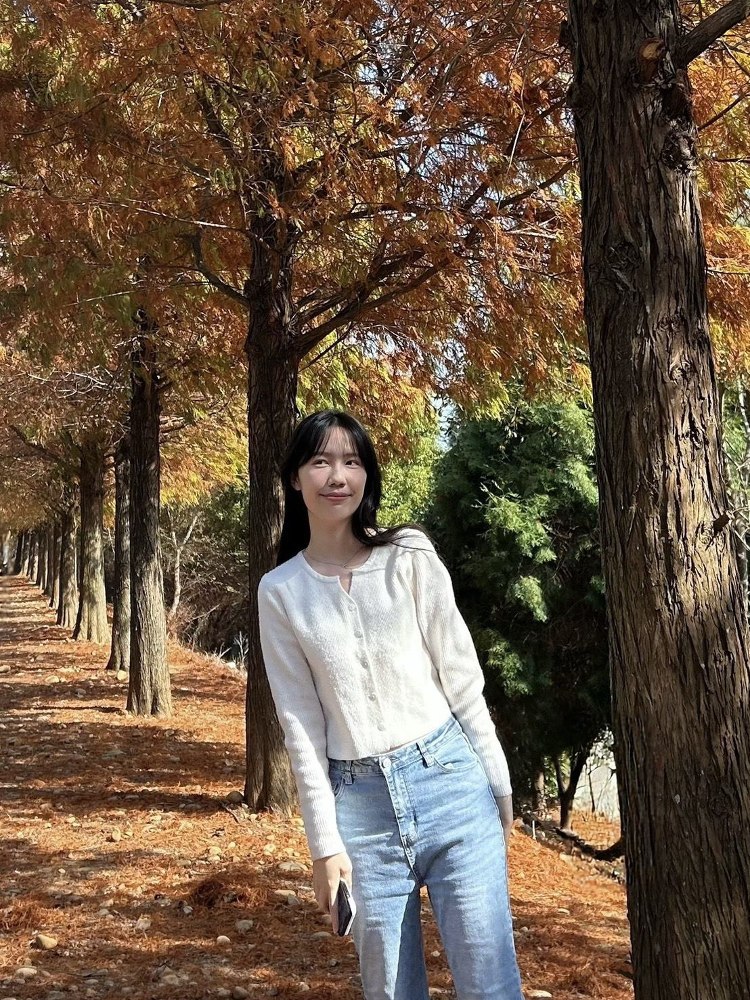

～歡迎來到我的個人網站～

哈囉！我是來自嘉義的陳鈺晴，我的家鄉有著宜人的氣候和美味的佳餚，像是豆漿豆花和火雞肉飯。我目前就讀於清華大學外國語文學系。我非常喜歡狗狗，而我最愛的食物是果凍和布丁。我覺得自己是個友善、耐心且心思細膩的人。朋友們則認為我很有責任心，因此在小組作業或一起規劃旅行時，我向來是個可靠的隊友與夥伴。
身為一個文學愛好者，我喜歡在閒暇時間閱讀台灣當代詩人的作品，例如陳繁齊和任明信的詩集。他們的文字深深地觸動著我的心弦，每當我感到沮喪低落時，這些詩句總是能帶給我慰藉，讓我意識到我並不孤單。除了讀詩外，彈奏烏克麗麗和聽西方流行音樂也是我的興趣，尤其是泰勒絲和紅髮艾德的歌。每當撥動琴弦並跟著我最愛的歌曲哼唱時，我就能忘卻生活中的壓力與煩惱。對我來說，音樂是生活中不可或缺的一部分！